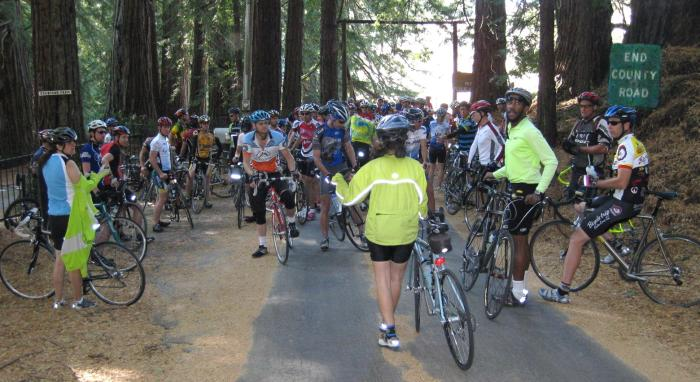

Week 4 Results: Bear Gulch
25 Oct 2008
|
2008 Low-Key Hillclimbs Week 4 Results: Bear Gulch 25 Oct 2008 |
|  |
| The group gathers at the bottom of Bear Gulch, awaiting James Porter's start (Christine Holmes photo) |
A new one this week: Bear Gulch Road, never before visited by Low-Key, and indeed never before visited by many long-time riders in the region, despite its proximity. Today was a day to emphasize the "Low" in "Low-Key", as the narrow road made for a congested start, and most riders lost plenty of time as those ahead tried in vain to clip into their pedals on the opening steep grades. But up the road it was blitzing the course with an excellent time, perhaps exploiting the absence of volunteer Tim Clark. In the women, Sisters of No Mercy profited handily with their new recruit , who with and moved the team to the top of not only the day's standings, but the series overall. Still a long way to go...
Thanks to help from Barry Burr, Bill Bushnell, Tim Clark, Howard Kveck, Greg McQuaid, Ben Stern, and Eric Willis for making today's climb possible!median time = 18:04
pl # rider team category time mph fph score 1 39 Clark Foy San Jose Bike Club 40+ 13:31 12.47 3933 133.66 2 458 Craig Sanders X Men 40+ 14:30 11.63 3666 124.60 3 507 Krishna Dole 30+ 14:54 11.32 3568 121.25 4 465 Rune Dahl Western Wheelers 45+ 15:01 11.23 3540 120.31 5 585 Michael Barnes 15:09 11.13 3509 119.25 6 471 David Nader Pen Velo/Kondra 35+ 15:16 11.04 3482 118.34 7 20 James Porter Western Wheelers Out Of Shape Dads 15:28 10.90 3437 116.81 8 444 Ernesto Castillo Chain Reaction 30+ 15:28 10.90 3437 116.81 9 142 Rich Hill LGBRC 40+ 15:44 10.72 3379 114.83 10 36 Bill Davis Google 4 15:45 10.70 3375 114.71 11 521 Vladmir Parrales Roaring Mouse 5 15:58 10.56 3329 113.15 12 479 Jeromy Cottell Pen Velo/Kondra 16:00 10.54 3323 112.92 13 250 Ian Sowden 16:05 10.48 3305 112.33 14 343 Matt Werner Bike Trip 45+ 16:08 10.45 3295 111.98 15 124 Jeff Farnsworth San Jose Bike Club 50+ 16:15 10.38 3271 111.18 16 421 Matt Wocasek Bike Trip 4 16:18 10.34 3261 110.84 17 67 Martin Hyland Western Wheelers 50+ 16:31 10.21 3219 109.38 18 452 Bruce Gardner Monta Vista Velo 35+ 16:44 10.08 3177 107.97 19 457 Robert Palassou Sisters of No Mercy 16:54 9.98 3146 106.90 20 349 Dennis Pedersen Bike Trip 45+ 16:55 9.97 3142 106.80 21 579 Jonathan Walden 16:55 9.97 3142 106.80 22 513 Nicholas Hack Roaring Mouse 5 17:09 9.83 3100 105.34 23 806 Ko Ihara Nvidia 25-29 17:20 9.73 3067 104.23 24 602 Ramon Ochoa Bike Forums 35+ 17:21 9.72 3064 104.13 25 272 Martin Hampton Pen Velo/Kondra 17:23 9.70 3058 103.93 26 283 Dan Talayco Two Wheel Tango GoatIbex 17:25 9.68 3052 103.73 27 273 Calvin Do Skinny slow guys 35+ 17:29 9.64 3041 103.34 28 4 Fred E. Stamm Pen Velo/Kondra 55+ 17:44 9.51 2998 101.88 29 241 Oliver Chan Voler 4 18:04 9.33 2942 100.00 30 455 Erik Strom Mud 'n' Crud 18:05 9.32 2940 99.91 31 520 Liam Stewart Roaring Mouse 5 18:41 9.02 2845 96.70 32 64 Keith Devlin Western Wheelers 60+ 18:46 8.98 2833 96.27 33 495 Moises Mojica Chain Reaction 35+ 18:49 8.96 2825 96.01 34 535 Tim Dent Roaring Mouse 5 19:11 8.79 2771 94.18 35 545 Jeff Vadasz Leafy Joe 40+ 19:14 8.77 2764 93.93 36 34 Stephen Fong Blubber Busters 5 19:16 8.75 2759 93.77 37 229 Michael Czepiel Apple 20-24 19:16 8.75 2759 93.77 38 110 Edward Miller SLACer 65+ 19:36 8.60 2712 92.18 39 291 Jay Kilby Team Spike 40+ 19:44 8.54 2694 91.55 40 337 Bruce Swanson Leafy Joe 45+ 19:48 8.52 2685 91.25 41 477 Mike Deitchman Mud 'n' Crud 30+ 20:07 8.38 2643 89.81 42 809 Phil Dubach Western Wheelers 35+ 20:09 8.37 2638 89.66 43 408 Richard Contreras 20:20 8.29 2614 88.85 44 336 Ed Noskowski Leafy Joe 45+ 20:25 8.26 2604 88.49 45 73 Barry Burr One Leg to Stand On 45+ 20:27 8.24 2600 88.35 46 505 Christopher Olson Google 20:42 8.14 2568 87.28 47 557 Matt Beadon Nvidia 30+ 21:17 7.92 2498 84.89 48 478 Patrick Callahan Western Wheelers 35+ 21:34 7.82 2465 83.77 49 504 Pete Gielow 50+ 21:41 7.78 2452 83.32 50 804 Marco Palmeri 25-29 22:49 7.39 2330 79.18T 51 615 Bob Corman Team Spike 23:39 7.13 2248 76.39 52 231 Murali Krishnan Commuter 35+ 24:29 6.89 2171 73.79 53 15 Rich Brunner Cruzie 39ish 24:52 6.78 2138 72.65 54 442 Hal Ramsey 25:48 6.53 2060 70.03 55 486 Reid Conti 25-29 26:48 6.29 1984 67.41 56 621 Paul Woodard Team Spike 29:41 5.68 1791 60.86 57 807 Kelly Heil Leafy Joe 45+ 29:59 5.62 1773 60.26 58 528 Sean Dawson Roaring Mouse 5 45:35 3.70 1166 39.63M M : mishap T : tandem score
median time = 24:07
pl # rider team category time mph fph score 1 449 Jennie Phillips Sisters of No Mercy 45+ 16:47 10.05 3167 143.69 2 240 Janet Martinez Sisters of No Mercy 40+ 17:45 9.50 2995 135.87 3 445 Mei Xi Mud 'n' Crud 18:44 9.00 2838 128.74 4 394 Holly Harris Sisters of No Mercy 45+ 19:42 8.56 2698 122.42 5 430 Sonja Wieck 20:23 8.27 2608 118.32 6 247 Daniela Becker Roaring Mouse 3 24:06 7.00 2206 100.07 7 249 Judith Alderman Road Divas 35+ 24:07 6.99 2204 100.00 8 111 Pat Parseghian Google 50+ 28:58 5.82 1835 83.26 9 256 Alison Chaiken Sisters of No Mercy 40+ 29:38 5.69 1794 81.38M 10 540 Ruth Pisingan Bike Forums 35+ 22:49 7.39 2330 79.18T 11 551 Holly Roberts Google 2 30:40 5.50 1733 78.64 12 512 Christina Vaughn Google 30:48 5.47 1726 78.30 13 246 Amy Tam Road Divas 31:20 5.38 1697 76.97 14 27 Christine Holmes Low-Key 40+ 32:00 5.27 1661 75.36 M : mishap T : tandem score
pl team score scoring 1 Sisters of No Mercy 401.98 (Jennie Phillips, Janet Martinez, Holly Harris) 2 Western Wheelers 346.51 (Rune Dahl, James Porter, Martin Hyland) 3 Pen Velo/Kondra 335.19 (David Nader, Jeromy Cottell, Martin Hampton) 4 Bike Trip 329.62 (Matt Werner, Matt Wocasek, Dennis Pedersen) 5 Roaring Mouse 318.57 (Vladmir Parrales, Nicholas Hack, Daniela Becker) 6 Mud 'n' Crud 318.45 (Mei Xi, Erik Strom, Mike Deitchman) 7 Google 285.24 (Bill Davis, Christopher Olson, Pat Parseghian) 8 Leafy Joe 273.67 (Jeff Vadasz, Bruce Swanson, Ed Noskowski) 9 San Jose Bike Club 244.84 (Clark Foy, Jeff Farnsworth) 10 Team Spike 228.81 (Jay Kilby, Bob Corman, Paul Woodard) 11 Chain Reaction 212.82 (Ernesto Castillo, Moises Mojica) 12 Nvidia 189.12 (Ko Ihara, Matt Beadon) 13 Bike Forums 183.31 (Ramon Ochoa, Ruth Pisingan) 14 Road Divas 176.97 (Judith Alderman, Amy Tam) 15 X Men 124.60 (Craig Sanders) 16 LGBRC 114.83 (Rich Hill) 17 Monta Vista Velo 107.97 (Bruce Gardner) 18 Two Wheel Tango 103.73 (Dan Talayco) 19 Skinny slow guys 103.34 (Calvin Do) 20 Voler 100.00 (Oliver Chan) 21 Apple 93.77 (Michael Czepiel) 21 Blubber Busters 93.77 (Stephen Fong) 23 SLACer 92.18 (Edward Miller) 24 One Leg to Stand On 88.35 (Barry Burr) 25 Low-Key 75.36 (Christine Holmes) 26 Commuter 73.79 (Murali Krishnan) 27 Cruzie 72.65 (Rich Brunner)